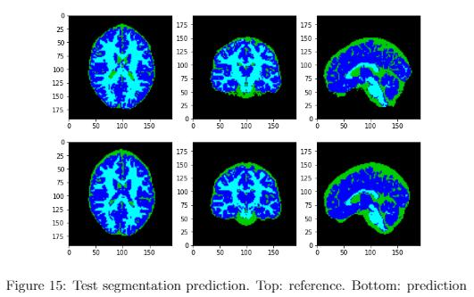
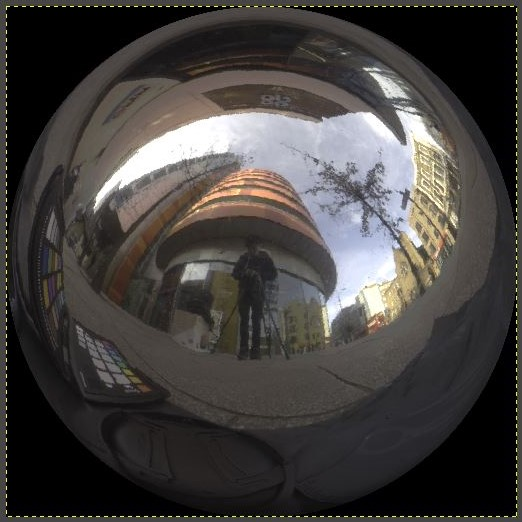
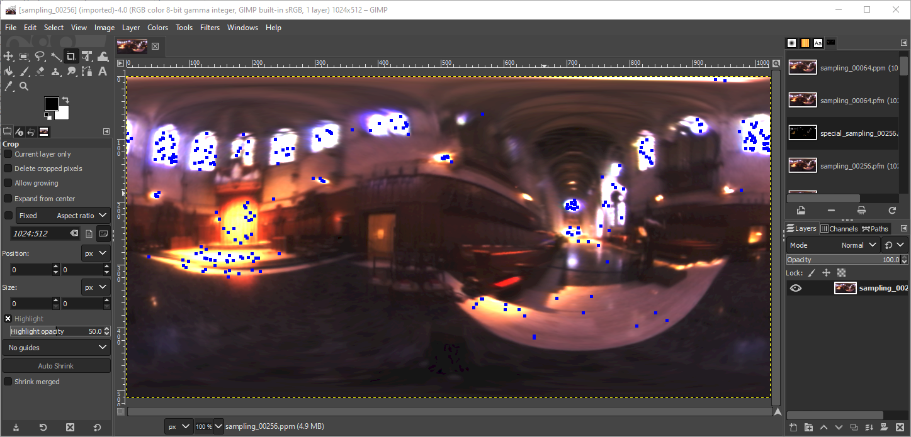
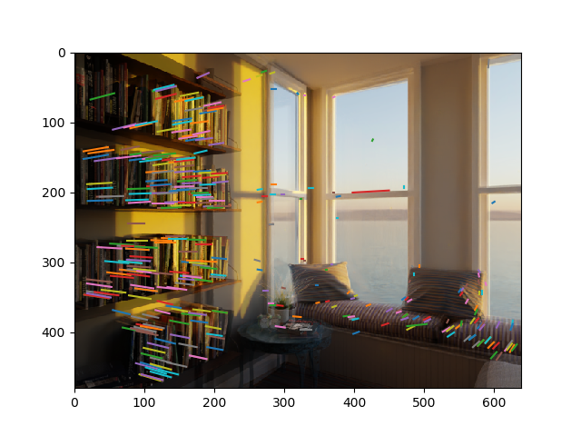
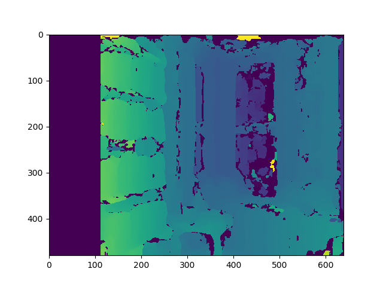

Jiawei Mo
Education
Imperial College London
Sept. 2020 - Sept. 2021
Master of Science in Computing GPA -
Oregon State University
Sept. 2015 - Mar. 2020
Bachelor of Science in Computer Science GPA 3.8/4.0
Research & Project
Advanced Large Scale UAV Flock Simulation (Ongoing)
Apr. 2021 – Present
Andrew Davison, Professor of Robot Vision and Director of Dyson Robotics Lab
- • Studied basic decentralized flock behaviors.
- • Used Euler grid to accelerate, allowing running thousands of particles on CPU under 50-60 FPS.
- • Found a way to maintain the group formation.
Brain Age Prediction from Magnetic Resonance Imaging (MRI)
Feb. 2021
- • Preprocessed voxel data using intensity normalization and downsampling.
- • Built U-net structure network with Pytorch to segment different brain tissues then apply regression, showing 7.5 Mean Absolute Error in age.
- • Rebuilt the model with deep convolution network, reducing age Mean Absolute Error to 6.5.

Ray Tracing & Image Processing
Feb. 2021
- • Implemented GPU ray tracing and soft shadow in the graphics shader.
- • Constructed a mirror ball using Image-based Lighting with Lat-Long Maps.
- • Generated numerous light sources through Monte-Carlo sampling and Median Cut according to an environment map.
- • Produced HDR images from image sets and used gamma function to convert HDR to LDR.



Feature Extraction and Surface Reconstruction
Oct. 2020
- • Detected salient features from images with SIFT and utilized nearest neighbour method to refine.
- • Corrected matched points by epipolar constraint.
- • Rectified images and reprojected them into 3D, obtaining disparity map and pixel depth.
- • Predicted the room height to be around 3.1 meters.


Reproduce the Publication: "Ghost SPH for Animating Water"
Feb. 2020
- • Studied the problem of non-viscosity between the stochastic surface and fluid particles.
- • Modeled objects with virtual particles, avoiding collision detection in fluid simulation.
- • Applied kernel functions to enable fluid pressure and viscosity.
- • Implemented with OpenCL for multi-processing, reaching a speed of 0.0037 GigaParticles/s.
Improve Life Safety from Near-field Tsunami Hazards
Sept. 2018 – July 2019
Haizhong Wang, Associate Professor of Civil & Construction Engineering
Sponsored by National Science Foundation (NFS)
- Using Agent-based Modeling to build a near-field tsunami evacuation simulation model to understand multi-agent evacuation decision-making under threat of near-field tsunami hazards and improve life safety coefficient.
- • Built City of Seaside traffic network with Unity3D engine.
- • Simulated multi-agent evacuation based on a heuristic shortest path algorithm, A-Star.
- • Implemented authentic reaction system by Prefabs, Instantiate and Social Force model.
- • Manipulated dynamic data with C# Serialization for further analysis.
- Using Agent-based Modeling to build a near-field tsunami evacuation simulation model to understand multi-agent evacuation decision-making under threat of near-field tsunami hazards and improve life safety coefficient.
- • Built City of Seaside traffic network with Unity3D engine.
- • Simulated multi-agent evacuation based on a heuristic shortest path algorithm, A-Star.
- • Implemented authentic reaction system by Prefabs, Instantiate and Social Force model.
- • Manipulated dynamic data with C# Serialization for further analysis.
Robot Grasping of Human-Centered Design
Sept. 2018 – June 2019
Cindy Grimm, Associate Professor of Mechanical Engineering and Electronic Engineering & Computer Science
- Achieving real-time object tracking through Image Recognition and Deep Learning in order to improve grasping efficiency of the robot arm.
- • Labeled, then classified pixel of the image set using K-means clustering and Support Vector Machine.
- • Built Neural Network and Semantic Segmentation Convolutional Neural Network (SegNet) with TensorFlow in Python.
- • Applied Resnet101 model in SegNet to improve object recognition.
- • Secured over 98% accuracy in Training, Validation and Test sets.
Pseudoknot Detection in RNA Secondary Structures
June 2019
- • Implemented three different structures of neural networks with TensorFlow and Keras in Python.
- • Tuned hidden layer, learning rate, momentum and decay to optimize models.
- • Achieved 97% of accuracy of Training set, 94.5% of accuracy of Validation set, and roc_auc_score 0.82.
- • Awarded TOP 3 in final accuracy competition.
Auto-Drive & Identification in Game - Need for Speed
Dec. 2017 - Feb. 2018
- • Extracted 20 frame/sec. from raw game video with PIL and OpenCV to supply a real-time picture set.
- • Trained by AlexNet Model Convolution Neural Network subsequent to picture data refinement with HoughLinesP and GaussianBlur algorithm.
- • Adopted TensorFlow Object Detection API to mark vehicles by drawing boxes and warning prompt while a latent collision existed.
Experience
Oregon State University, US
Teaching Assistant
Sept. 2019 – Dec. 2019
Mokylin Group, Shenzhen, China
Game Developer Internship
June 2018 – Aug. 2018
Honors & Awards
Oregon State University Honor Roll (consecutive in years)
Computer Science Dean's List (consecutive in terms)
Electrical Engineering and Computer Science Scholarship
Skills & Tools
Programming Language: C, Python, C++, JavaScript, LATEX, Prolog, C#, Shell, JAVA, Intel X86 Assembly, Haskell
Web Development: HTML, CSS, Node.js, MySQL, MongoDB
Software: Visual Studio, Unity 3D, Unreal 4, Maven
Programming Interfaces: OpenGL, Three.JS, GLSL, OpenMP, OpenCL
Python Package for ML and DL:Numpy, Pytorch, TensorFlow, Keras, OpenCV, Scikit-learn, Matplotlib, Pillow
Neural Network Model:AlexNet, VGG, ResNet, U-net, Yolo, DCGAN, VAE
Relevant Courses
- Machine Learning & Data Mining
- Machine Learning for Image
- Analysis of Algorithms
- Parallel Programming
- Computer Vision
- Artificial Intelligence
- Deep Learning
- Image Synthesis
- Computer Architecture
- Computer Graphics
- Computer Animation
- Operating Systems
Jiawei Mo — jiawei.mo20@imperial.ac.uk — (+44) 7579912072